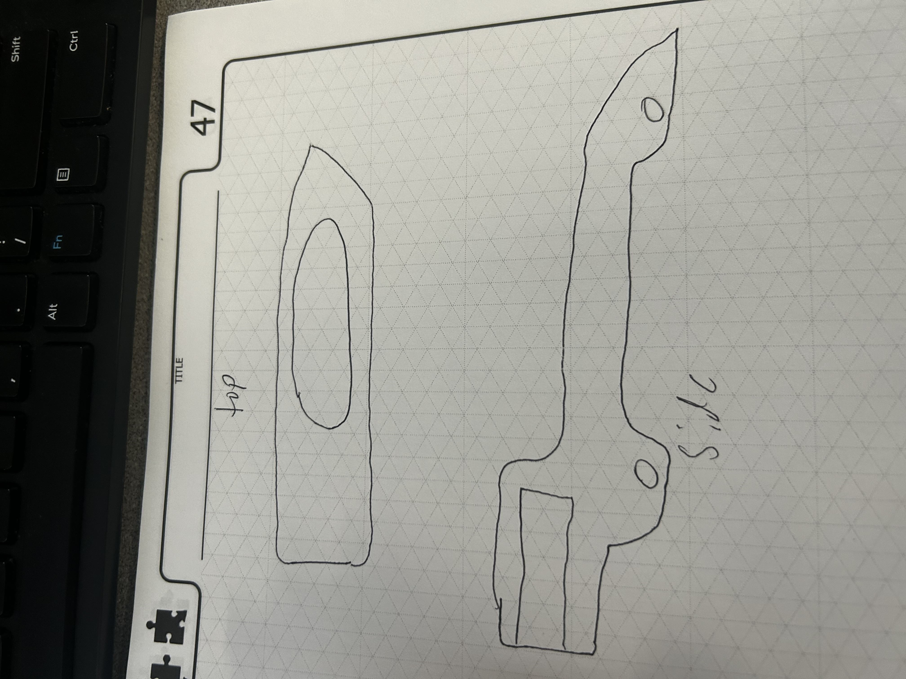
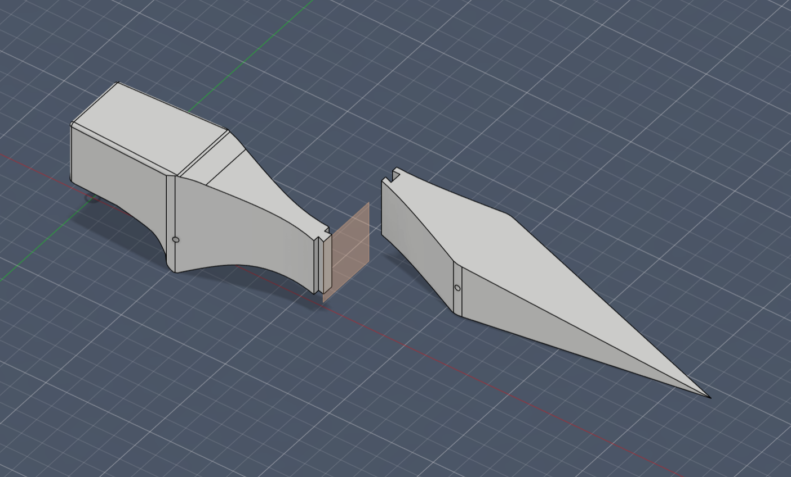
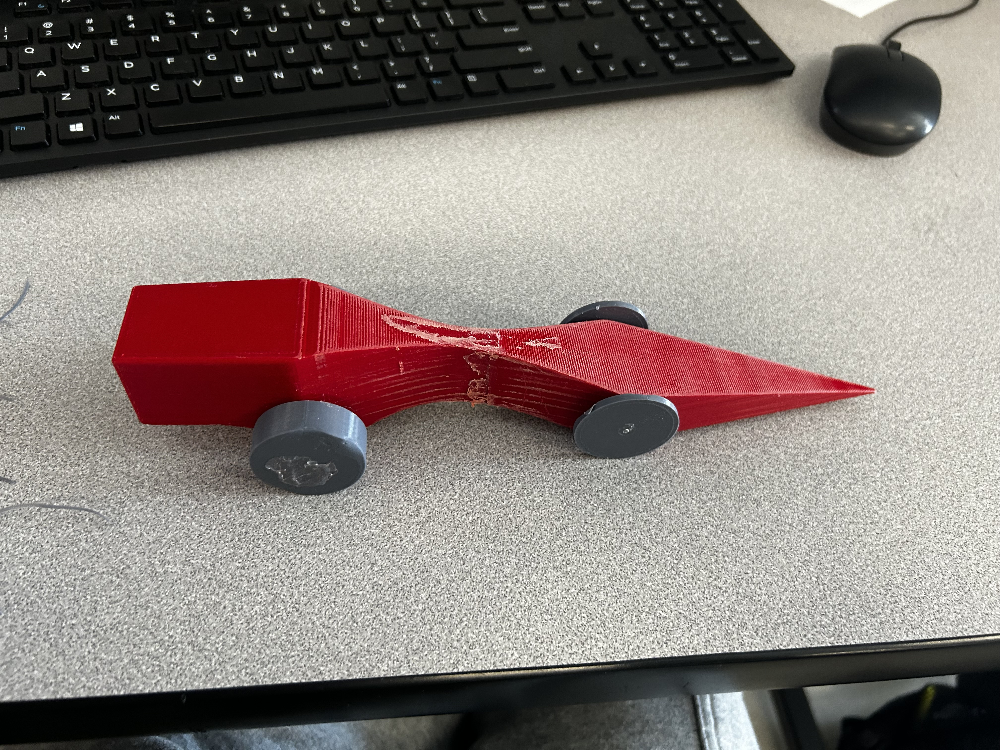

I was tasked with designing and building a CO2 dragster for a school project. The dragster had to be powered by a CO2 cartridge and fit
within specific dimensions. The goal was to build the fastest possible dragster while staying within project constraints, with the biggest
one being weight. It couldn’t be too light.
I also had to split the dragster into two pieces because the print bed was too small to fit the full body. To solve that, we used a dovetail joint
in the middle to connect both halves. In the design, I had to balance aerodynamics, weight distribution, and material strength to make sure the
dragster would perform well on the track.

One of the first things I researched was the dragster’s design. I looked into different aerodynamic shapes and configurations to reduce air resistance and increase speed. I also researched strength and weight, since a lighter dragster usually performs better. This research helped me make better decisions during the design and build process.

Based on my research, I came up with a sleek, aerodynamic dragster design. I used CAD software to create a detailed model, which helped me make everything very precise. I got the dovetail joint to fit perfectly, and I also sanded down the body to improve aerodynamics. I had to iterate on the design a few times to get the weight just right, and I also had to make sure the wheels could spin as freely as possible. That part was a little difficult because we used iron wire for the axles, so they weren’t perfectly straight.

Overall, the dragster performed well, and I think I won the race overall, which was really cool. This was honestly one of the most fun projects I’ve done. It was really rewarding to see the dragster come to life from just an idea and a sketch, and then to see it perform on the track was even better. If I were to do this project again, I’d probably experiment with different materials or designs to see if I could make it even faster. I’m really proud of how it turned out and the process I went through to get there. I liked this project because it was a simple, fun project that wasn’t too hard, but still had a good amount of engineering and design involved.